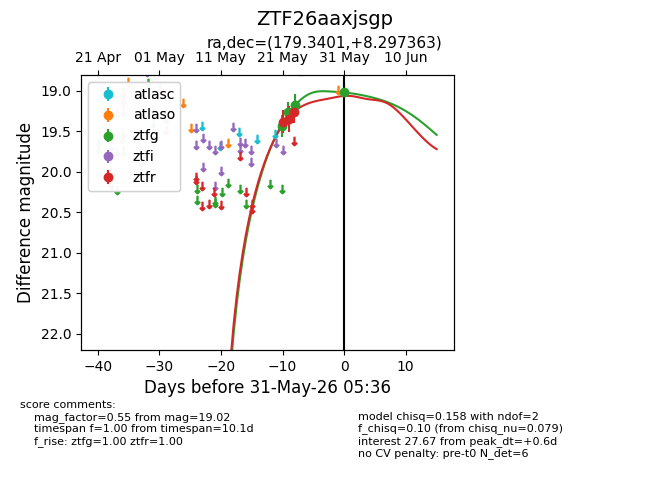
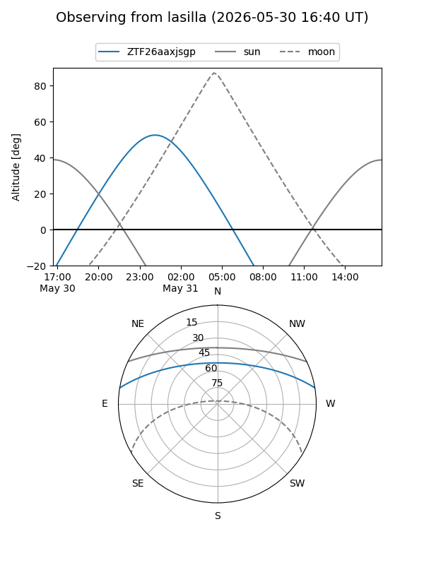
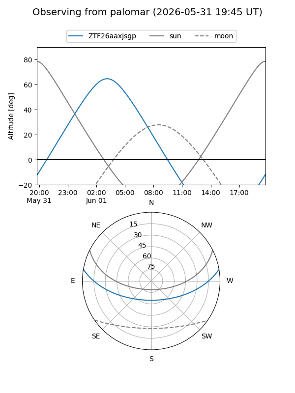
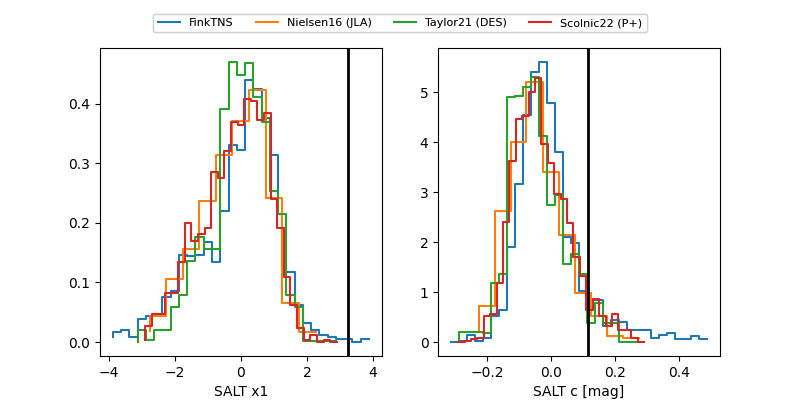

ZTF26aaxjsgp
Target ZTF26aaxjsgp at 2026-05-31 05:37
Aliases and brokers:
lsst-FINK: link
lsst-Lasair: link
lsst-ALeRCE: link
ztf-FINK: link
ztf-Lasair: link
ztf-ALeRCE: link
alt names
ZTF26aaxjsgp (ztf,fink_ztf)
Coordinates:
equatorial (ra, dec) = 179.3401,+8.29736
equatorial (HMS+DMS) = 11:57:21.63,+08:17:50.51
galactic (l, b) = (266.2252,+67.23102)
Flags:
Photometry:
last ztfg=19.02, ztfr=19.27
4 ztfg, 3 ztfr detections
Lightcurve

Visibility


Additional plots
